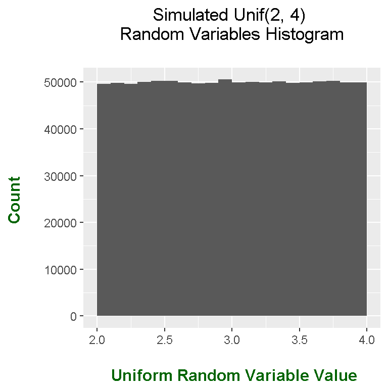
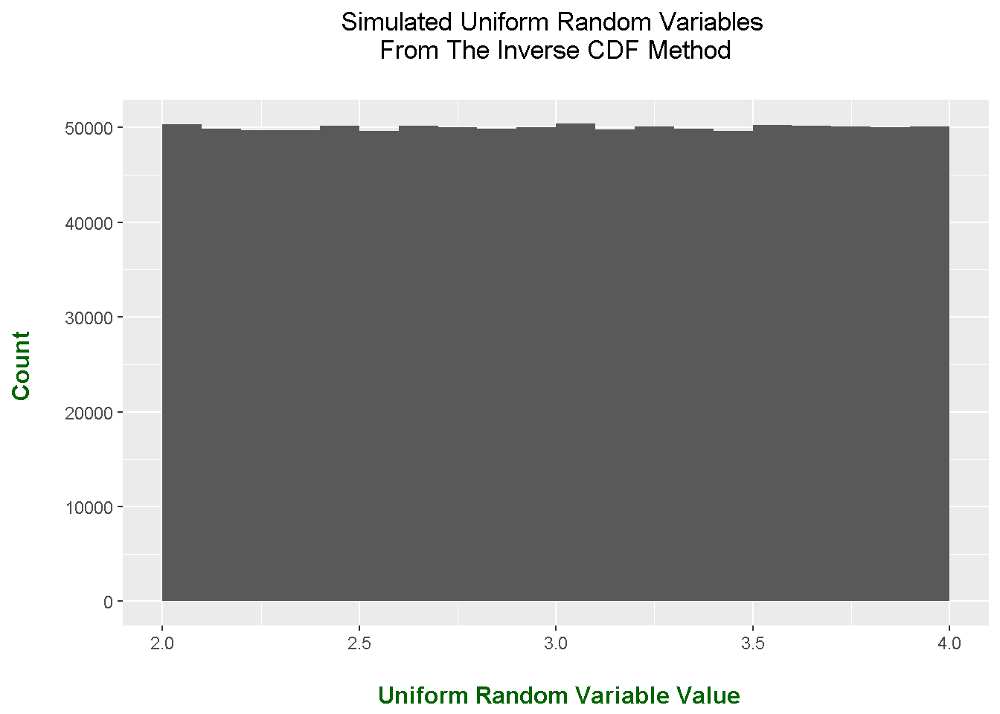
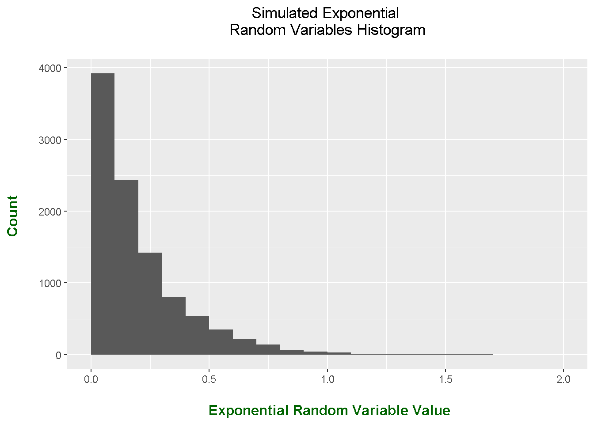
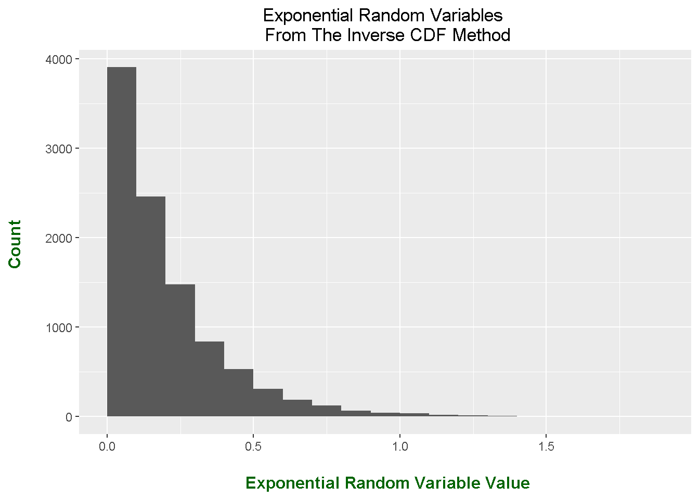
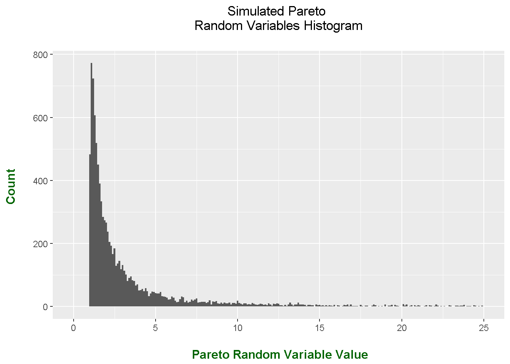
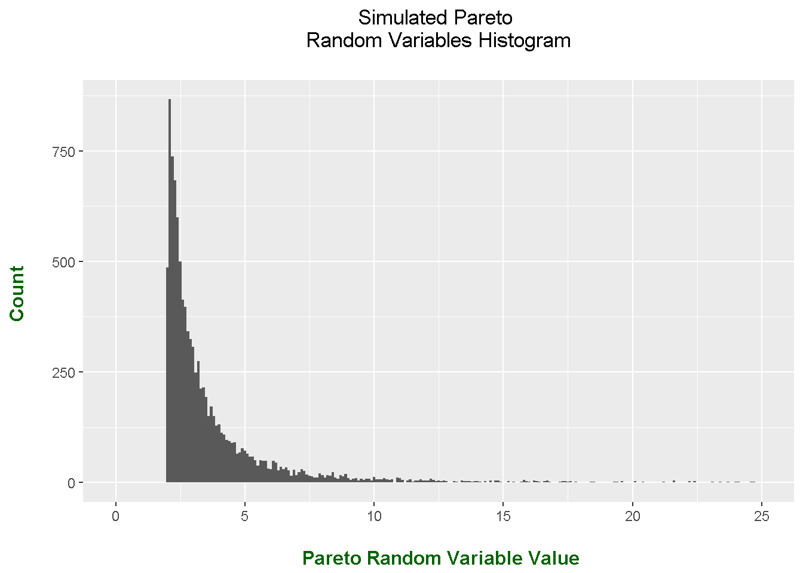

Hi. This is a follow up math and stats post on the The Inverse CDF Method. Examples on how this Monte Carlo simulation method works will be shown here. The main idea is that we generate various random variables with standard uniform random variables.
Example One - Generating Uniform Random Variables With Standard Uniform Random Variables
Example Two - Exponential Distribution
Example Three - Pareto Distribution
Before doing any random number generation in R, the ggplot2 package is loaded by typing in library(ggplot2).
# Inverse CDF Monte Carlo Method Examples (With ggplot2)
library(ggplot2)
set.seed(100)
I also implement a random seed such that the results can be reproduced. Not using a random seed would yield different results everytime random numbers/variables are generated.
This first batch of code is about generating random numbers from a uniform distribution with a minimum of 2 and a maximum of 4. A plot (using ggplot2) is included.
# Simulating 1 Million i.i.d Unif(a = 2, b = 4) R.Vs Case & Plot
uniforms_ab_sim <- runif(n = 10^6, min = 2, max = 4)
# Plot of simulated Unif(2, 4) random variables; Should be close to a rectangle:
ggplot(data = NULL, aes(uniforms_ab_sim)) +
geom_histogram(binwidth = 0.1, boundary = 2) +
labs(x = "\n Uniform Random Variable Value", y = "Count \n", title = "Simulated Unif(2, 4) \n Random Variables Histogram \n") +
theme(plot.title = element_text(hjust = 0.5),
axis.title.x = element_text(face="bold", colour="darkgreen", size = 12),
axis.title.y = element_text(face="bold", colour="darkgreen", size = 12))
It may not be obvious to see how there are 1 million observations in the plot but I will explain it here. Each bin has a binwidth of 0.1 so there would be 20 bins from 2.0 to 4.0. The height of the (near) rectangle is 50000. The one million comes from 20 x 50000.
This second batch of code is about generating the same uniform random variables with a minimum of 2 and a maximum of 4 but from the Inverse CDF Method. The generating formula is:
\[a + (b - a)U\]
where U is a standard uniform random variable with a minimum of 0 and a maximum of 1.
Since I want to generate uniform random variables with a minimum of 2 and a maximum of 4, I have \(a = 2\) and \(b = 4\). The code and output can be found below.
# The generating formula for generating Unif(a, b) ends up being:
# F^(-1)(U) = a + (b - a)U where U is a Unif(0, 1) random variable.
# Generating Unif(a = 2, b = 4) using Inverse CDF Method and Unif(0, 1):
unif_invCDFs <- 2 + 2*runif(n = 10^6, min = 0, max = 1)
# Plot should be similar to the plot before.
ggplot(data = NULL, aes(unif_invCDFs)) +
geom_histogram(binwidth = 0.1, boundary = 2) +
labs(x = "\n Uniform Random Variable Value", y = "Count \n", title = "Simulated Uniform Random Variables \n From The Inverse CDF Method \n") +
theme(plot.title = element_text(hjust = 0.5),
axis.title.x = element_text(face="bold", colour="darkgreen", size = 12),
axis.title.y = element_text(face="bold", colour="darkgreen", size = 12))
For the most part, the plot here is not much different from the plot above. The plots are not exactly the same due to randomness.
Recall that from the previous post that we generated an exponential random variable with \(x > 0\) and the rate lambda was \(\lambda > 0\). The continuous probability distribution of the exponential random variable is:
\[\displaystyle f(x) = \lambda \text{e}^{-\lambda x}\]
From finding the inverse of the cumulative distribution function (CDF) we came to the generating formula for X as \(X = -\dfrac{1}{\lambda} \text{ln}(1 - U)\).
Alternatively, we can use \(X = -\dfrac{\text{ln}(U)}{\lambda}\) since \((1 - U) \sim \text{Unif}(0, 1)\) from \(U \sim \text{Unif}(0,1)\).
R Code
We use this generating formula \(X\) to simulate exponential random variables from standard uniform random variables. A sample size of 10000 is used and the rate/lambda is 5. The code is for simulating exponential random variables directly from the rexp() function R and from the Inverse CDF Method.
### Example Two:
# We generate exponential random variables from uniform random variables
# through the Inverse CDF Method.
# Exponential simulation in R:
lambdaRate = 5 #lambdaRate value can be changed accordingly
# Simulating exponential random variables with a sample size of 10000.
E <- rexp(10000, lambdaRate)
# Plot of exponential random variables; Should be close to exponential decay.
ggplot(data = NULL, aes(E)) +
geom_histogram(binwidth = 0.1, boundary = 2) +
labs(x = "\n Exponential Random Variable Value", y = "Count \n", title = "Simulated Exponential \n Random Variables Histogram \n") +
theme(plot.title = element_text(hjust = 0.5),
axis.title.x = element_text(face="bold", colour="darkgreen", size = 12),
axis.title.y = element_text(face="bold", colour="darkgreen", size = 12))
#----------------
# Simulating Exponential Random Variables Using Unif(0,1) With Inverse CDF Method
U <- runif(n = 10000, min = 0, max = 1) # Simulate Unif(0,1) r.v's
X <- -(log(U)/lambdaRate) # Generating formula from Inverse CDF
# Plotting the simulation results:
ggplot(data = NULL, aes(X)) +
geom_histogram(binwidth = 0.1, boundary = 2) +
labs(x = "\n Exponential Random Variable Value", y = "Count \n",
title = "Exponential Random Variables \n From The Inverse CDF Method") +
theme(plot.title = element_text(hjust = 0.5),
axis.title.x = element_text(face="bold", colour="darkgreen", size = 12),
axis.title.y = element_text(face="bold", colour="darkgreen", size = 12))
For the most part, the frequency distributions are quite similar. The Inverse CDF Method for approximating/simulating an exponential random variable does a good job from standard uniform random variables.
Despite people knowing about Pareto’s 80-20 rule, the Pareto distribution is not really discussed much in introductory probability & statistics books (in my opinion).
Given the shape parameter \(k\) and the scale parameter \(\lambda\), the Pareto distribution has a probability density function (pdf) of:
\[f(x) = \dfrac{k \lambda^k}{x^{(k + 1)}} \text{ for } x > \lambda\]
The generating formula for the Pareto distribution is:
\[\frac{\lambda}{U^{1/k}}\]
with \(U\) as the standard uniform random variable.
Details of finding this generating formula involves integration and some algebra which can be found here.
The code for generating Pareto random variables involves creating a function for the generating formula. This function allows the user to input the size of the generating sample and the parameter size for lambda and k. I show the code and plots for Pareto random variables for lambda and k being 1 and for lambda and k being 2.
### Example Three: Pareto Distribution Simulations
# Resources: http://www.math.wm.edu/~leemis/chart/UDR/PDFs/Pareto.pdf
# http://isites.harvard.edu/fs/docs/icb.topic1475777.files/stat110hw5solutions.pdf
# Inverse CDF Method for simulating Pareto rvs:
pareto_invCDF_funct <- function(n = 1, lambda = 1, k = 1){
unifs <- runif(n, min = 0, max = 1) # Simulate standard uniforms.
invCDF_formula <- lambda/((1 - unifs)^(1/k)) # lambda / ((1 - U))^(1/k)
invCDF_formula <- lambda/(unifs^(1/k)) # U is a standard uniform rv; 1 - U also std. uniform
return(invCDF_formula)
}
pareto_11 <- pareto_invCDF_funct(10000, lambda = 1, k = 1)
# Plot of simulated Pareto lambda = 1, k = 1 random variables;
ggplot(data = NULL, aes(pareto_11)) +
geom_histogram(binwidth = 0.1) + xlim(c(0, 25)) +
labs(x = "\n Pareto Random Variable Value", y = "Count \n", title = "Simulated Pareto \n Random Variables Histogram \n") +
theme(plot.title = element_text(hjust = 0.5),
axis.title.x = element_text(face="bold", colour="darkgreen", size = 12),
axis.title.y = element_text(face="bold", colour="darkgreen", size = 12))## Warning: Removed 408 rows containing non-finite values (stat_bin).
# Pareto with lambda = 2 and k = 2
pareto_22 <- pareto_invCDF_funct(10000, lambda = 2, k = 2)
# Plot of simulated Pareto lambda = 2, k = 2 random variables;
ggplot(data = NULL, aes(pareto_22)) +
geom_histogram(binwidth = 0.1) + xlim(c(0, 25)) +
labs(x = "\n Pareto Random Variable Value", y = "Count \n", title = "Simulated Pareto \n Random Variables Histogram \n") +
theme(plot.title = element_text(hjust = 0.5),
axis.title.x = element_text(face="bold", colour="darkgreen", size = 12),
axis.title.y = element_text(face="bold", colour="darkgreen", size = 12))## Warning: Removed 49 rows containing non-finite values (stat_bin).